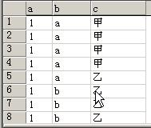

单表查询
单表查询完整语法
select distinct 字段1,字段2... from 库名.表名
where 条件
group by 分组字段
having 条件
order by 排序字段
limit 限制条数;重中之重！！关键字的优先级如下：
-- 这表有设计不合理的地方 但别在意 只是建出来为单表查询服务的！(´▽｀)
create table employee(
id int not null unique auto_increment, -- 员工id
name varchar(20) not null, -- 姓名
sex enum('male','female') not null default 'male', -- 性别
age int(3) unsigned not null default 28, -- 年龄
hire_date date not null, -- 入职日期
post varchar(50), -- 岗位
post_comment varchar(100), -- 职位描述
salary double(15,2), -- 薪水
office int, -- 办公室
depart_id int -- 部门编号
);
简单查询¶
四则运算、函数 concat concat_ws、case语句、指定列
select * from employee;
-- 先看有没有employee这张表,打开表读表中的一行行数据 `*` 代表每行数据的全部字段都要.
select name,post from employee;
select distinct post from employee; # distinct作用对象不是字段 是每行记录！
-- 字段结合四则运算
select name,salary*12 as annual_salary from employee; # 给字段起别名
select name 名字,salary*12 年薪 from employee; # as可以省略掉 字段名+空格+别名
-- 使用函数
select database(); # 当前使用的数据库
select user(); # 当前登录的用户
-- concat函数很重要！！用于拼接字符串
-- 特别是在数据库迁移的时候 将旧表的数据拼一拼放到新表里
select concat('姓名',':',name),concat('年薪:', salary*12) from employee;
-- concat_ws函数 第一个参数为分隔符
select concat_ws(':','姓名',name) as new_name from employee;
-- 结合case语句 (多分支的if-else判断)
-- case语句了解即可 通常都是拿到数据后用python语言for循环if-else判断来解决
SELECT
id,
(
CASE
WHEN NAME = 'egon' THEN
NAME
WHEN NAME = 'alex' THEN
CONCAT(NAME, '_BIGSB')
ELSE
concat(NAME, 'SB')
END
) AS new_name
FROM
emp;
/*指定列*/
# 123 as other --:> 在查询结果后面额外增添一列 别名为other 列值全为123
select id, name as NM, 123 as other from info;
# -- max/min/sum 注意: 此处映射部分的sql语句子查询应满足只返回一个数据！！
select
id,
name,
666 as num,
( select max(id) from depart ) as mid, -- 等同于123 as mid,
( select min(id) from depart) as nid,
age
from info;
# 它相当于每一行都要根据info.depart_id的值去映射depart表中的title值.
# 注意: 效率很低！假设info表有7行数据,则除了info表自身查询的一次还有每次的关联查询,共8次.
select
id,
name,
(select title from depart where depart.id=info.depart_id) as x1
from info;
where 条件¶
where字句中可以使用:
<1) 比较运算符：> < >= <= !=
<2) between 80 and 100 值在 [80,100]闭区间
<3) in(80,90,100) 值是10或20或30 not in (1,4,6)
<4) like 'egon%'
pattern可以是%或_ %表示任意多字符 _表示一个字符
<5) 逻辑运算符: 在多个条件直接可以使用逻辑运算符 and or not
select * from employee where id>=10;
select * from employee where id>=10 and id<=13;
-- 等同于
select * from employee where id between 10 and 13;
select * from employee where id=10 or id=13 or id=15;
-- 等同于
select * from employee where id in (10,13,15)
-- 判断某个字段值是否为NULL 不能用等号 需要用is
select * from employee where post_comment is null;
select * from employee where post_comment is not null;
-- 注意！！设置字段值为''空字符串 并不等同于null (o^^o)
update employee set post_comment='' where id<3;
select * from employee where name like 'ji%';
select * from employee where name like 'ji_';
# 声明 / 之后的字符不作为通配符使用
select * from employee where name like '/_ji_';
group by 分组¶
将经历过where条件筛选的多条记录进行归类.
注意哈! 没有where条件相当于所有条件都为真！相当于写了个 where 1>0 .
如果我们用unique的字段作为分组的依据, 则每一条记录自成一组, 这种分组没有意义
多条记录之间的某个字段值相同, 该字段通常用来作为分组的依据
set sql_mode='only_full_group_by'; (sql模式了解 严格模式.)
分完组后 能看到的字段只有分组的字段以及聚合的结果.
聚合函数
max、min、avg、sum、count
在分完组后,以组为单位统计出一个结果,一个组只出一个结果
-- 举栗: 取每个部门的最高工资、取每个部门的员工数、取男生数和女生数
-- [小窍门] '每'这个字后面的字段,就是我们分组的依据
select post,max(salary) from employee group by post;
select post,min(salary) from employee group by post;
select post,avg(salary) from employee group by post;
select post,sum(salary) from employee group by post;
select post,count(id) from employee group by post;
select sex,count(id) from employee group by sex;
-- 取每个部门男员工的平均薪资
select post,avg(salary) from employee where sex='male' group by post;
-- 取每个部门年龄大于20岁的员工的平均薪资
select post,avg(salary) from employee where age>20 group by post;
-- 扩展
-- GROUP BY关键字和GROUP_CONCAT()函数一起使用
SELECT post,GROUP_CONCAT(name) FROM employee GROUP BY post;# 查询岗位名以及岗位包含的所有员工名字
group by b,c -- 是将b和c看作一个整体进行分组

having 过滤¶
where是针对分组前所有的记录进行过滤！
having是针对分组后的组进行过滤,不是记录！能否使用聚合函数？where不可以,having可以.
-- 取出男员工的平均薪资大于10000的部门｜取出各部门平均薪资大于10000的男员工
select post from employee where sex='male' group by post having avg(salary) > 10000;
# select salary from employee where max(salary)>10000;(报错！！)
# 为啥不报错？因为这个位置的聚合函数是在分组之后运行的.没有group by就相当于整体是一组.
select max(salary) from employee; -- 取所有人的最高薪资
order by 排序¶
order by是在分组之后的 是可以使用聚合函数的.
按单列排序
SELECT * FROM employee ORDER BY salary;
SELECT * FROM employee ORDER BY salary ASC; -- 升序(默认)
SELECT * FROM employee ORDER BY salary DESC; -- 降序
按多列排序:先按照age升序排序,如果年纪相同,则按照薪资降序排序
SELECT * from employee ORDER BY age, salary DESC;
-- 取出男员工的平均薪资大于10000的部门并按照平均薪资降序排列.
select
post
from employee
where sex='male'
group by post
having avg(salary) > 10000
order by avg(salary) desc; -- 是对组进行的排序！所以在这个场景下只能使用分组字段和聚合函数.
limit¶
SELECT * FROM employee ORDER BY salary DESC LIMIT 3; # 默认初始位置为0
-- 分页展示
# 从第0开始,向后获取5条数据 即 1-5行的数据
SELECT * FROM employee ORDER BY salary DESC LIMIT 0,5;
# 从第5开始,向后获取5条数据 即 6-10行的数据
SELECT * FROM employee ORDER BY salary DESC LIMIT 5,5;